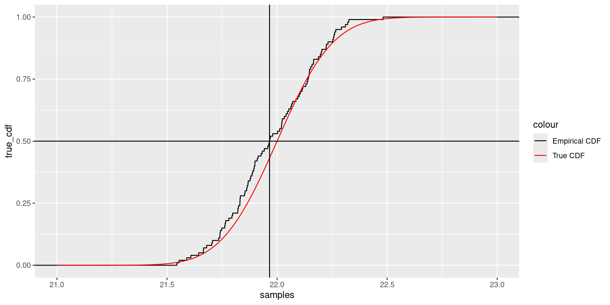
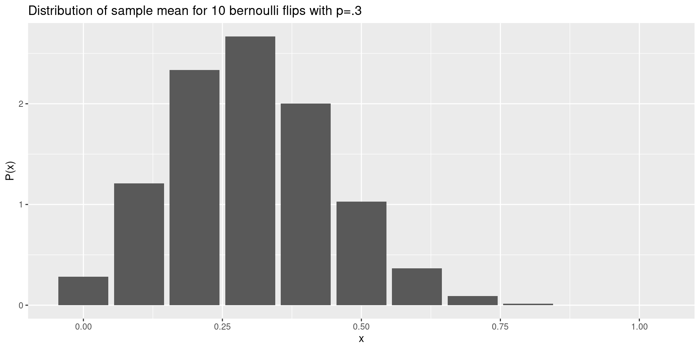
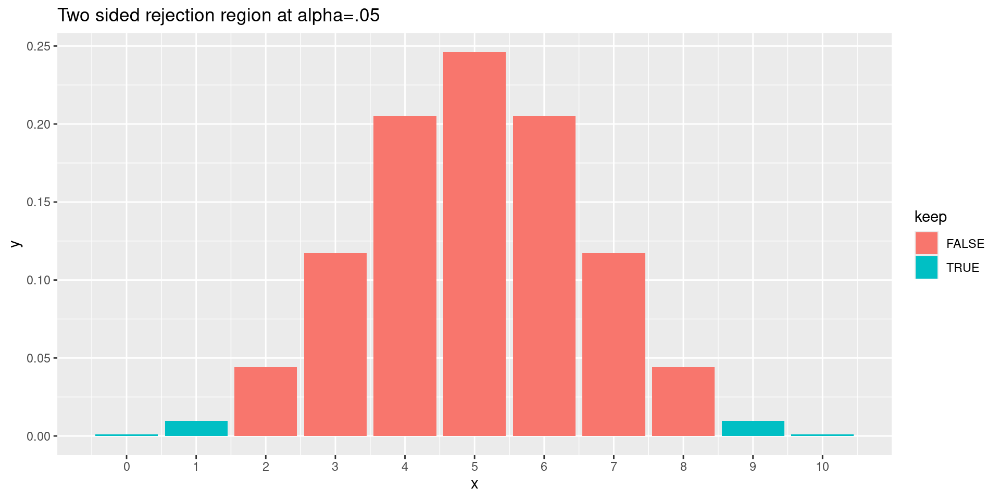

An underlying collection \(S\) of all possible outcomes (a population or sample space) of an experiment.
A rule \(P\) that assigns a number between zero and one to each subset of the sample space satisfying certain rules.
Sample Space
For example:
For a flip of a single coin, the possible outcomes are Heads and Tails and the sample space has two elements. For multiple flips, the outcomes are sequences of Heads and Tails.
For a measurement of temperature, we might model the possible outcomes, or the sample space, as all real numbers, recognizing that only some of them are actually possible results of the experiment.
Simple Events
The elements of the sample space or population are the outcomes or simple events or sample points.
For a flip of a coin, the possible outcomes are Heads or Tails. For multiple flips, the possible outcomes are particular sequences of Heads or Tails.
For a measurement of temperature, a simple event would be a particular number obtained at a particular time.
Events
Subsets of the population make up events or outcomes.
Among the population made up of sequences of 10 coin flips, the subset consisting of sequences containing at least 3 heads is an event.
Among the measurements of temperature, a measurement lying between say 22 and 25 degrees celsius would be an event.
Probability Measure
The last element of probability theory is the function P that assigns a number between 0 and 1 to every event such that
\(P(\emptyset)=0\)
\(P(S)=1\).
If \(A\cap B=\emptyset\) then \(P(A\cup B)=P(A)+P(B)\). This is also required to hold for infinite collections of disjoint sets but we won’t worry much about the foundations of probability.
Random Variables
A random variable is a rule that assigns a number to an event.
We can assign the value 1 to heads and 0 to tails. This is a bernoulli random variable.
Our sample space can be sets of 10 coin flips. The number of heads is a random variable.
The measurement of temperature yields a number.
If we pick a person at random, we can assign the value 1 if they wear glasses and 0 if not.
Discrete vs Continuous Random Variables
A discrete random variables takes “separate” values depending on the event. A continuous random variable takes values in a range.
Bernoulli random variable is discrete (0/1)
Number of heads in 10 flips is discrete (takes values 0,…,10)
Temperature is continuous (in principle can get any reading)
Mass of a penguin is continuous
Species of penguin is discrete
Events and Random Variables
Specifying a value, or a range of values, for a random variable defines an event.
Bernoulli example
Sample space is \(\{H,T\}\)
\(P(H)=p\)
\(X\) is the random variable with \(X(H)=1\) and \(X(T)=0\)
Then:
\(X=1\) is the same as the event \(H\)
\(P(X=1)\)=p
Independence
Two events are independent if the chance of both occurring is the product of the chances of them occurring separately.
\[
P(X\cap Y)=P(X)P(Y)
\]
Binomial Example
A binomial random variable (with parameters \(n\) and \(p\)) is the sum of \(n\) bernoulli random variables with probability \(p\). It corresponds to flipping a coin (with \(P(H)=p\)) \(n\) times and counting up the heads.
The probability of getting \(k\) heads is \[
P(k)=\binom{n}{k}p^k(1-p)^{n-k}
\]
Binomial Distribution
Continuous example
Sample space is the possible temperatures at a particular point in space and time.
Random variable \(T\) is a measure of temperature.
\(P(21<T<22)\) is the probability that the temperature is between 21 and 22 degrees.
Probability density functions
In the continuous case, probability is measured by a probability density function \(P(x)\). The classic example is the normal (bell-shaped) curve.
Density Functions
If \(P(x)\) is the density function, then:
the probability that \(x\) lies between \(a\) and \(b\) is the area under density function between \(a\) and \(b\).
Area gives probability
The shaded area gives probability 0.87 for temp between 21.7 and 22.3.
Standard Normal
A normal curve is defined by two parameters:
the mean \(\mu\), which sets the location
the standard deviation \(\sigma\) or its square, the variance \(\sigma^2\), which sets the scale.
Z-score
If \(x\) is a normal random variable with mean \(\mu\) and variance \(\sigma^2\), then \[
z = \frac{x-\mu}{\sigma}
\] is a normal random variable with mean \(0\) and variance \(1\). This is called a \(z\)-score or a standard normal variable.
Cumulative Distribution
The cumulative distribution is a function \(f(x)\) such that \(f(x)\) is the the percentage of samples that are less than \(x\).
Cumulative Distribution

So the median of the samples occurs where the \(y\)-axis is \(.5\).
Quantiles
If \(q\) is between \(0\) and \(1\), then the \(q^{th}\) quantile \(Q\) of a random variable \(x\) is the value of \(x\) such that the fraction of the population with \(x<Q\) is \(q\).
The median of \(x\) is the \(.5\) quantile for \(x\) because half of the population has values less than the median.
One can read quantiles from the cumulative distribution.
Distributions in R
There are many distributions in R. We’ve talked about the binomial (discrete) and normal (continuous).
rnorm (rbinom) draws samples from the distribution
dnorm (dbinom) gives the value of the probability density function
pnorm (pbinom) gives the value of the cumulative density function
qnorm (qbinom) gives the quantiles, that is, qnorm(p) gives the value of the parameter so that the probability of getting a result less than that parameter is p.
Examples in R
samples <-rnorm(10, mean =0, sd =1)densityfn <-dnorm(1, mean =0, sd =1)cdf <-pnorm(1, mean =0, sd =1)quant <-qnorm(.05, mean =0, sd =1)cat("samples: ", samples, "\n")
The sample median and the sample quantiles (such as the 25th percentile or 75th percentile) are examples of order statistics.
The smallest element, the second smallest element, and so on are other examples of order statistics.
Order Statistics example
We take 100 samples from a normal distribution and compute the median, minimum, and maximum. Then we do that 10000 times and produce a histogram.
Order Statistics Histogram
The multinomial distribution
The multinomial distribution arises when you have \(n\) outcomes for your experiment, say \(x_1,\ldots, x_n\); and the probability of getting \(x_i\) is \(p_i\). Here we have to have \[
\sum p_{i}=1.
\]
This generalizes the bernoulli distribution.
Mean
The mean of a random variable is perhaps the most important statistic associated with a probability space.
The mean is the “average value” of the random variable.
The mean of \(x\) is denoted \(\overline{x}\) .
Expectation or expected value is another name for the mean, and so the mean is also denoted \(E(x)\).
Mean – discrete case
In the discrete case:
\[
\overline{x}=\sum_{a\in X} x(a)p(a)
\]
In other words, the mean of \(\overline{x}\) is the sum of \(x\) at each event, weighted by the probability of that event.
Mean of a bernoulli random variable
If \(x\) is bernoulli, with \(p(x=1)=p\), then the mean of \(x\) is \[
p(1)+(1-p)(0)=p.
\]
Mean of a binomial random variable
If \(x\) is binomial, corresponding to the sum of \(N\) bernoulli random variables with probability \(p\), then \[
\overline{x} = \sum_{0\le i\le N} i\binom{N}{i}p^{i}(1-p)^{N-i}=Np
\]
Mean – continuous case
The mean of a continuous random variable is given by an integral:
\[
\overline{x} = \int_{X} xp(x) dx
\]
where \(p(x)\) is the probability density. This is the limiting case of the formula in the discrete case.
Mean of standard normal
The mean of the standard normal is zero.
Variance and standard deviation
The variance of a random variable measures how it is distributed around its mean value.
The variance is the average value of the difference between \(x\) and its mean.
\[
\sigma^2=E((x-\overline{x})^2)
\]
In the case of a discrete random variable with outcomes values \(x\) having probability \(p(x)\), the variance is \[
\sum_{x} (x-\overline{x})^2p(x)
\]
Variance alternative formula
This is the same as
\[
\sigma^2 = \overline{x^2}-(\overline{x})^2
\]
The standard deviation is the square root of the variance.
Variance of Bernoulli
In the Bernoulli case, the variance is \[
(1-p)^2p+p^2(1-p)=p(1-p).
\]
Notice that the maximum variance happens when \(p=1/2\).
Variance of Binomial
A binomial random variable with probability \(p\) and \(n\) trials is a sum of \(n\) bernoulli random variables with probability \(p\). Using the formula you get \[
\sigma^2 = \sum_{i=0}^{n}(i-np)^2\binom{n}{i}p^{i}(1-p)^{n-i}
\]
This turns out to be \[
\sigma^2 = np(1-p).
\]
Note: there are easier ways to get this formula. If two random variables are independent, then the variance of their sum is the sum of their variances.
Sampling
In practice we study random variables through samples. A sample of a random variable is a choice of values distributed according to the associated probability. So for example a sample of a Bernoulli random variable is a coin flip where \(P(H)=p\).
Sampling
If we draw \(N\) sample values \(x_i\) ofa random variable, then the mean and variance of those sampled values, computed by
\[
\overline{x} = \frac{1}{N}\sum x_{i}
\]
and \[
\overline{x} = \frac{1}{N-1}\sum (x_{i}-\overline{x})^2
\]
Sample Mean and Variance
The formulae above are called the sample mean and variance; they are estimates of the mean and variance of the underlying random variable.
The law of large numbers says that, as \(N\to\infty\), these estimates converge to the true values.
In general these values are also random (they depend on the particular choices drawn from the distribution) and follow their own probabilility distribution.
Distribution of sample mean and variance
So for example, if you sample a Bernoulli random variable \(10\) times, the mean is \[
\frac{k}{N}
\] where \(k\) is the number of heads.
This mean follows a binomial distribution.
Sampling Distribution

By looking at sample means (or other sample statistics) we can try to uncover information about the underlying probability distribution.
Hypothesis Testing
A statistical hypothesis is a claim about a particular population. A hypothesis test is a method to determine which of two contradictory hypotheses is supported by the data.
Underlying idea: a lot of surprising things happen by chance. If you do an experiment and observe an effect, that might be the result of pure chance. Can you quantify that?
An example
Suppose we have a coin and we’d like to do some testing to determine if we have reason to suspect that the coin is biased. Put another way, you’d like to know if this coin behaves differently from a reference, standard coin that is fair.
Note this is more common than you might think. It might arise in the following circumstance in “real life.” You have two web pages, your current one and a proposed new one. You’d like to know if seeing the proposed one increases the chance of a viewer clicking through to something. This is called A/B testing and it amounts to comparing the probability of click-through in the reference case to the proposed case.
Null (and alternative) hypotheses
The Null hypothesis is the hypotheses that our coin is fair, or that our two web pages yield the same results, or more generally that the observations we make are accounted for only by chance and not by some underlying effect. So our null hypothesis for our coin is “P=.5”.
An alternative hypothesis is a statement that contradicts the null hypothesis. For example, “P>.5” or “P<.5” or “P is different from .5.”
Test statistic
A test statistic is a measurement of the data used to draw conclusions about the sample.
Back to our example
For our test statistic, we are going to use the fraction of times we get a head in N flips.
In the A/B testing situation, our test statistic would be the fraction of times a person “clicked through” when given the proposed web site.
Intuitively, if the fraction of heads differs significantly from the expected fraction of heads (.5) then we take that as strong evidence for the unfairness of our coin (or the increased value of our proposed web page).
How can we quantify this?
Rejection region and “significance”
To make things concrete, suppose the coin is fair (in other words, the null hypothesis is true) we flip the coin \(10\) times. If the coin is far, we expect to get roughly 5 heads.
There’s a long tradition of saying something unlikely is “significant” if the chance of it occurring, assuming the null hypothesis, is less than .05 or one in twenty.
The chance of getting \(0\), \(1\), \(9\), or \(10\) heads is \(.02\). If we allow \(2\) or \(8\) heads in addition, the chance is about \(11%\), so if we set our significance level at \(.05\) we reject the null hypothesis if our experiment yields \(0\), \(1\), \(9\), or \(10\) heads.
This is the “rejection region.”
Rejection Region (plot code)
library(ggplot2)# two-sidedrejection2 <-function(n,d=10) { results <-data.frame(x=seq(0,n),y=dbinom(seq(0,n),n,.5),keep=sapply(seq(0,n),function(x) (x<qbinom(.025,n,.5)) | (x>qbinom(.975,n,.5))))ggplot(data=results,aes(x=x,y=y,fill=keep))+geom_bar(stat="identity")+scale_x_continuous(breaks=seq(0,n,d))+ggtitle("Two sided rejection region at alpha=.05")}
More code
rejection1 <-function(n,d=10) { results <-data.frame(x=seq(0,n),y=dbinom(seq(0,n),n,.5),keep=sapply(seq(0,n),function(x) (x>qbinom(.95,n,.5))))ggplot(data=results,aes(x=x,y=y,fill=keep))+geom_bar(stat="identity")+scale_x_continuous(breaks=seq(0,n,d))+ggtitle("One sided rejection region at alpha=.05")}
Rejection Region (plotted)

One-sided test
Suppose you want evidence that your coin is more likely to get heads.
-Your null hypothesis is that your coin has \(p=.5\). Your alternative hypothesis is \(p>.5\).
The probability of getting 0,1,2 heads is \(.054\), which is a bit larger than \(.05\). So the one-sided test would reach significance only at 0 or 1 heads same as the two-sided test.
But suppose we did 50 flips? Then the one- and two-sided limits are slightly different on the right.
One-sided rejection region
One-sided rejection region
Normal approximation
For large \(n\), the binomial distribution distribution with probability \(p\) becomes a version of the normal distribution with mean \(Np\) and standard deviation \(\sqrt{Np(1-p)}\).
Normal and binomial distribution
So one can use the normal distribution to determine the rejection region if \(n\) is large.
Errors
Two things can go wrong:
Type I error: You reject the null hypothesis, but the null hypothesis is true. The probability of a Type I error is something you choose when you set the significance level. This is usually called \(\alpha\).
Type II error: You accept the null hypothesis when it is false. In this case, you’ve missed an actual effect. This probability of this is called \(\beta\).
Tradeoff between error types
Other things equal, if you make \(\alpha\) smaller (thus reducing the chance of a Type I error) you make \(\beta\) bigger (increasing the chance of a type II error).
Statistical Power
Informally, statistical power measures the ability of an experiment to detect a real effect. If a study has high power, then you are very unlikely to make a Type II error.
For example, return to the coin flipping problem (or the A/B testing problem).
Power
Suppose we flip our coin \(20\) times and our null hypothesis is that \(p=.5\) If our significance level is \(.05\), we will reject the null hypothesis and conclude that the coin is not fair (and biased towards heads) provided we get \(15\) or more heads.
Power Computations
# look at the probability density for this caseprobs <-dbinom(seq(0, 20), 20, .5)# The qbinom function tells us the thresholdrejection <-qbinom(.95, 20, .5)# We check this by comparing the probability of $15-20$ vs $14-20$ heads:sum(probs[16:21]) # remember probs[i] is the chance of i-1 heads
[1] 0.02069473
sum(probs[15:21])
[1] 0.05765915
# The chance of $15-20$ heads is greater than $.05$.
Power
Now suppose the coin is not fair and \(p=.6\). What is the chance that we accept the null hypothesis and conclude, falsely, that the coin is fair? It is the chance that we get \(14\) or fewer heads when \(p=.6\).
This is \(87\) percent! In other words, our experiment is very unlikely to detect the unfairness of the coin if the unfairness is only the difference between \(p=.6\) and \(p=.5\)
Power
But if the coin is very unfair, with, say \(p=.8\), then we find:
Now we have a 70% chance of detecting the difference unfairness of \(p=.6\).
An AB example
Baseline situation: We show two different web ads to customers at random, and measure how often the visitor clicks through the ad.
Of the 4800 who see ad A, 975 click through. Of the 4600 who see ad B, 1133 click through.
Is Ad B better than Ad A or is this explained by chance?
More on AB example
Null hypothesis: the two ads are the same, and of the 9400 who see an ad, 2108 click through. This is a probabiility of 22.4%.
The .95 quantile for the binomial distribution with n=4600 and p=.224 is 1077. Thus the 1133 click through rate is significantly higher. Similarly the 975 out of 4800 is significantly lower.
So ad B is better than ad A at the .05 significance level. In fact the odds of getting a number as high as 1133 is more like 1 in 10^4 so the evidence for ad b is overwhelming.